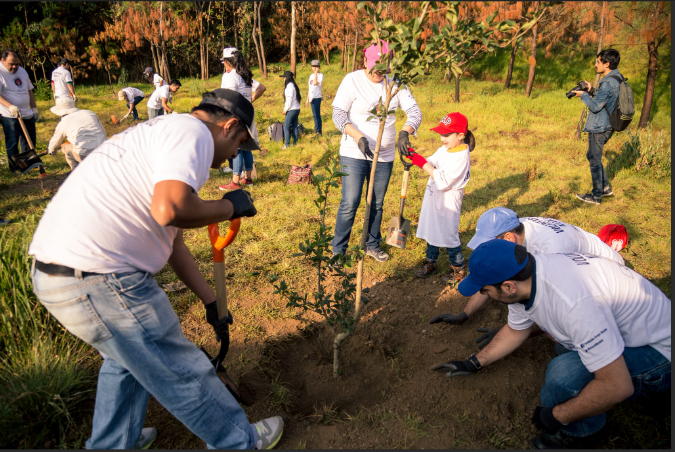

La reducción de desastres y la preservación del medio ambiente tareas permanentes de las Universidades Cubanas
March 16, 2024 | Posted by ing.Daniela Mora, ing. Daniel Chavez | Archivado en Política y Cultura, primavera 2016, núm. 45, pp. 11-30, La educación continuada en el proceso de reducción de desastres
“Los desastres en su interacción con la ciencia, la tecnología y la sociedad”
Reducción de desastres naturales: la experiencia de CubaImportancia de la reducción de desastres y la conservación del medio ambiente en Cuba
March 15, 2024 | Posted by ing.Daniela Mora 
La reducción de desastres y la conservación del medio ambiente en Cuba son dos aspectos fundamentales que están estrechamente interconectados y que desempeñan un papel crucial en la protección de la población, los ecosistemas y la sostenibilidad a largo plazo del país.
Defensa Civil de Cuba
March 15, 2024 | Posted by ing.Daniela Mora
La Defensa Civil se concibe como un sistema integrado por todas las fuerzas y recursos de la sociedad y del Estado, con la función de proteger a las personas y sus bienes, la infraestructura social, la economía y los recursos naturales, de los peligros de desastres, de las consecuencias del cambio climático y la guerra.
Read more » "https://www.ecured.cu/Defensa_Civil_de_Cuba/"
Sidebar Menu
Referencia
- Concepto de RRD:
Reducción del Riesgo de Desastres - La Universidad al servicio del Medio Ambiente
- Cubadebate
La educacion superior tiene que asumir un papel cada vez mas protagonico -
ONU Programa para el Medio Ambiente
Reducción del Riesgo de Desastres Basada en Ecosistemas - Ecured
- Universidad de las Ciencias Informáticas
UCI